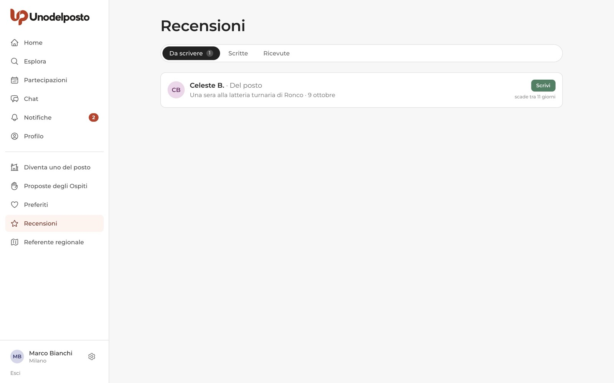
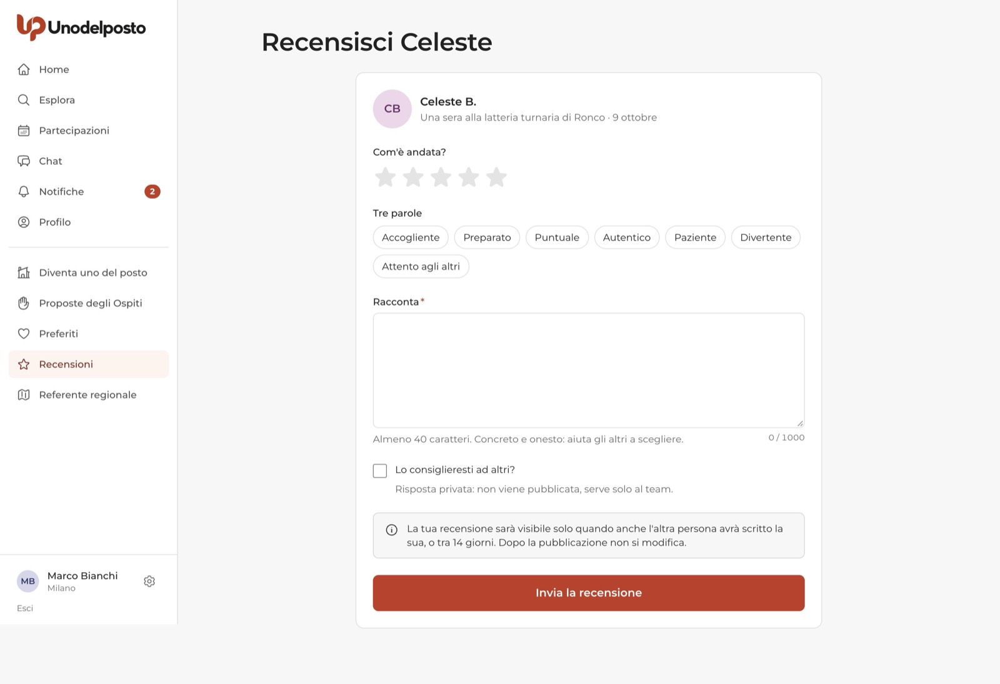
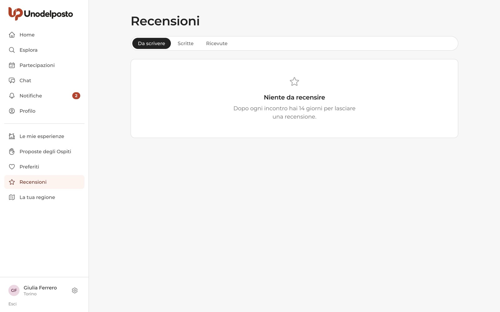

Dopo ogni incontro, chi ha accolto e chi ha partecipato si recensiscono a vicenda. Le recensioni sono il modo più semplice per fidarsi di qualcuno che non conosci ancora: dicono com'è stato passare qualche ora insieme, con parole vere e non con numeri gonfiati.
Funzionano allo stesso modo per l'Ospite e per la persona del posto. Nessuno legge la recensione dell'altro prima di aver scritto la propria: così ognuno è libero di essere onesto, senza timore di ripicche.
14 giorni
Dalla fine dell'incontro hai 14 giorni per scrivere la tua recensione.
A carte coperte
Le recensioni compaiono quando avete scritto entrambi, oppure alla scadenza dei 14 giorni.
Una risposta
A una recensione ricevuta puoi rispondere in pubblico, una volta sola.
Due medie
Sul profilo il voto come persona del posto e quello come Ospite restano separati.
Se hai partecipato
Racconta com'è stato l'incontro con chi ti ha accolto.
Quando puoi scrivere
La recensione si apre quando l'incontro è finito, secondo l'orario indicato nell'esperienza. Ricevi un avviso "Com'è andata a …?" con il pulsante Scrivi la recensione. Da quel momento hai 14 giorni.
Puoi recensire solo un incontro a cui eri approvato e che si è svolto davvero. Se chi ti ha accolto segna che l'incontro non si è svolto, non ci sono recensioni da scrivere. Se ti ha segnato come assente, non puoi recensire.
Dove trovi le recensioni
Nel menu scegli Recensioni. La pagina ha tre schede:
- Da scrivere: le persone che puoi ancora recensire, con il titolo dell'esperienza, la data e quanti giorni restano ("scade tra 11 giorni"). Premi Scrivi.
- Scritte: le recensioni che hai già inviato. Finché non sono pubblicate leggi "In attesa della recensione dell'altra persona (o della scadenza)".
- Ricevute: le recensioni che gli altri hanno scritto su di te, una volta pubblicate.
Trovi lo stesso collegamento anche in Partecipazioni, nella scheda Passate: accanto all'incontro c'è Scrivi recensione, oppure "Recensione inviata" se l'hai già fatto.

Scrivere la recensione
- Dai le stelle. Alla voce "Com'è andata?" scegli da una a cinque stelle.
- Scegli qualche parola. In "Tre parole" tocca le qualità che ti sono rimaste: Accogliente, Preparato, Puntuale, Autentico, Paziente, Divertente, Attento agli altri. Sono facoltative.
- Racconta. Nel campo Racconta scrivi almeno 40 caratteri (al massimo 1000). Concreto e onesto: cosa avete fatto, come ti sei trovato, a chi lo consiglieresti.
- Rispondi alla domanda privata. "Lo consiglieresti ad altri?" è una risposta privata: non viene pubblicata e la legge solo lo staff di Unodelposto.
- Invia. Premi Invia la recensione.

Se hai accolto
Prima conferma l'incontro, poi recensisci ogni partecipante.
Prima: conferma com'è andata
Quando l'incontro finisce ricevi un avviso per confermarlo. Apri l'esperienza da Le mie esperienze: nella pagina trovi il riquadro "Com'è andata?".
- Controlla chi è venuto. Tutti i partecipanti approvati sono spuntati. Togli la spunta a chi non si è presentato.
- Conferma. Premi Sì, l'incontro c'è stato. Chi hai tolto dalla lista viene segnato come assente.
- Oppure, se è saltato tutto. Premi No, non si è svolto: l'incontro non conta tra quelli avvenuti e non si recensisce. Non si può annullare, e non si può più scegliere se qualcuno ha già scritto una recensione.
Puoi confermare fino alla chiusura dei 14 giorni. Così sui profili contano solo gli incontri veri.
Recensire i partecipanti
In Recensioni, scheda Da scrivere, trovi una riga per ogni partecipante: ognuno ha la sua recensione. Il modulo è lo stesso dell'Ospite, con due differenze:
- le "Tre parole" sono Puntuale, Curioso, Rispettoso, Simpatico, Parla volentieri, Affidabile;
- la domanda privata è "Lo accoglieresti di nuovo?". Anche questa la legge solo lo staff.
Puoi recensire anche chi hai segnato come assente: è giusto che resti traccia di un posto tenuto libero per niente. Chi è segnato come assente, invece, non può recensire te.

Per entrambi
Pubblicazione, risposta, profilo pubblico e segnalazioni.
Quando diventa visibile una recensione
Ogni recensione resta nascosta finché non succede una di queste due cose:
- avete scritto entrambi: in quel momento le due recensioni compaiono insieme;
- passano 14 giorni dalla fine dell'incontro: la recensione già scritta viene pubblicata anche se l'altra persona non ha scritto la sua.
Quando una recensione su di te viene pubblicata ricevi un avviso, per esempio "Giulia F. ti ha lasciato una recensione", con il voto ricevuto.
Rispondere a una recensione ricevuta
- Apri "Ricevute". Da Recensioni, terza scheda.
- Premi "Rispondi pubblicamente (una volta sola)". Si apre un campo di testo, fino a 500 caratteri.
- Pubblica. Premi Pubblica risposta. La risposta compare sotto la recensione, con il tuo nome.
La risposta serve soprattutto a dare la tua versione quando una recensione ti sembra ingiusta. Resta calmo e concreto: chi legge apprezza una risposta educata più di una lunga difesa.
Dove compaiono sul profilo pubblico
Ogni persona ha un profilo pubblico, che apri da "Vedi il profilo" nella scheda di un'esperienza. Nel riquadro a sinistra ci sono due voti separati, Come persona del posto e Come Ospite. Finché non ci sono recensioni leggi "Nuovo". Più in basso trovi gli incontri fatti, le partecipazioni e, se sono almeno 2, le assenze.
La sezione Recensioni mostra le recensioni ricevute, con un selettore per passare da quelle "Come persona del posto" a quelle "Come Ospite". Ogni recensione riporta le stelle, il testo, le parole scelte e l'eventuale risposta. Le ultime recensioni di chi accoglie compaiono anche nella scheda dell'esperienza, sotto "Cosa dicono di…".

Segnalare una recensione scorretta
Una recensione negativa non è per forza scorretta: per quella c'è la risposta. Segnala invece una recensione che contiene insulti, dati personali, cose false o richieste di denaro.
- Apri il profilo di chi l'ha scritta. Sotto i voti trovi Segnala (serve aver fatto l'accesso).
- Scegli il motivo. Per esempio "Contenuto o comportamento inappropriato" o "Mi è stato chiesto denaro".
- Spiega. In "Cosa è successo" indica quale recensione (esperienza e data) e cosa non va. Puoi allegare uno screenshot.
- Invia. Premi Invia la segnalazione. Lo staff di Unodelposto legge ogni segnalazione e chi è segnalato non sa chi l'ha inviata.
Se lo staff decide che una recensione non rispetta le regole, la nasconde: non compare più sul profilo e non conta nella media.
Assenze e annulli tardivi
Chi non si presenta senza avvisare viene segnato come assente da chi accoglie. L'assenza non toglie il diritto di ricevere una recensione, ma toglie quello di scriverla. Dalla seconda assenza compare sul profilo pubblico come "2 assenze" e la vedono le persone del posto quando leggono le tue candidature.
Diverso è chi avvisa: "Non posso più venire" non è un'assenza. Se però avvisi a meno di 24 ore dall'inizio, viene conteggiato come annullo tardivo e chi accoglie lo vede accanto alla tua candidatura.
Domande frequenti
Posso modificare una recensione dopo averla inviata?
No. Dopo la pubblicazione la recensione non si modifica. Rileggila con calma prima di premere "Invia la recensione".
Perché non vedo ancora la recensione che ho ricevuto?
Perché l'altra persona aspetta la tua, o i 14 giorni non sono ancora passati. Appena scrivi la tua, se lei ha già scritto, compaiono tutte e due.
Sono passati 14 giorni e non ho scritto niente. Posso ancora farlo?
No, la finestra si chiude. La recensione dell'altra persona, se c'è, viene pubblicata lo stesso.
Le stelle e le "Tre parole" sono obbligatorie?
Le stelle e il testo sì (almeno 40 caratteri). Le parole sono facoltative.
Posso parlare di soldi in una recensione?
Su Unodelposto non gira denaro, nemmeno nelle recensioni. Se qualcuno ti ha chiesto soldi durante l'incontro, non scriverlo solo nella recensione: usa "Segnala" e scegli "Mi è stato chiesto denaro".
Ti serve su carta?
La stessa guida in PDF, da stampare o inviare.